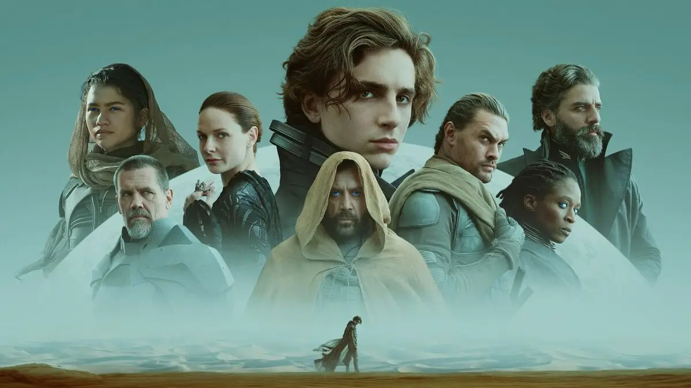

Duna - 2021
SINOPSE
Não recomendado para menores de 14 anos
Inspirado na série de livros de Frank Herbert, Duna se passa em um futuro longínquo. O Duque Leto Atreides administra o planeta desértico Arrakis, também conhecido como Duna, lugar de única fonte da substância rara chamada de "melange", usada para estender a vida humana, chegar a velocidade da luz e garantir poderes sobrehumanos. Para isso ele manda seu filho, Paul Atreides (Timothée Chalamet), um jovem brilhante e talentoso que nasceu para ter um grande destino além de sua imaginação, e seus servos e concubina Lady Jessica (Rebecca Fergunson), que também é uma Bene Gesserit. Eles vão para Duna, afim de garantir o futuro de sua família e seu povo. Porém, uma traição amarga pela posse da melange faz com que Paul e Jessica fujam para os Fremen, nativos do planeta que vivem nos cantos mais longes do deserto.